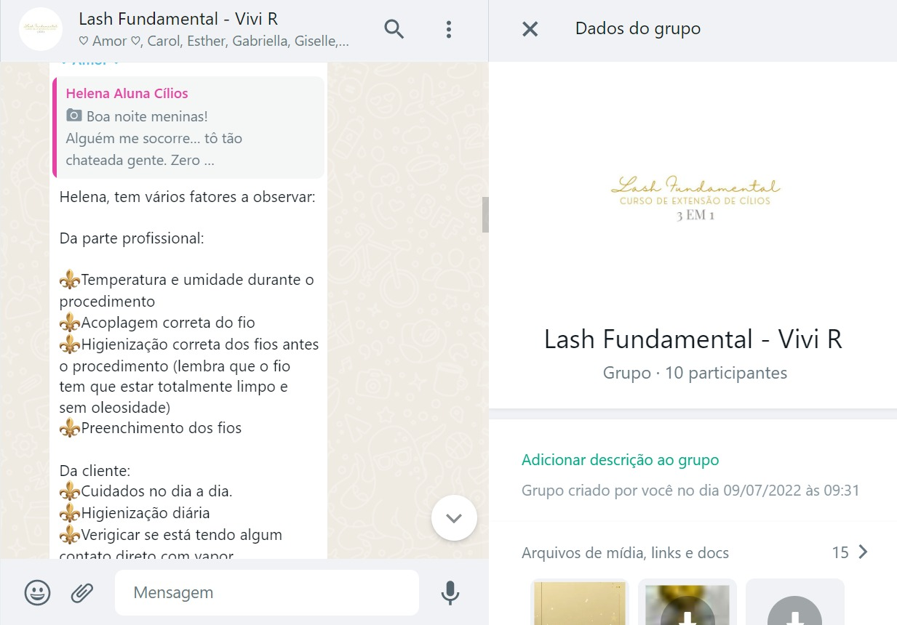
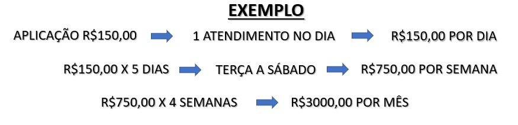

CURSO 3 EM 1 LASH FUNDAMENTAL
Presencial - Fios Tecnológicos
Fio a Fio Clássico
Volume Brasileiro
Volume Egípcio
Presencial - Fios Tecnológicos
Fio a Fio Clássico
Volume Brasileiro
Volume Egípcio
Olá, muito prazer. Sou Vivi Riguete, expert em extensão de cílios há mais de 4 anos e formada em administração de empresas. Empresária e fundadora do @StudioViviRiguete, o qual é pioneiro em embelezamento do olhar na cidade de Cataguases-MG. Graduada pelas melhores máster brasileiras, possuo mais de 20 certificações e estou em constante atualização.
Se você deseja se tornar uma lash designer, começando do zero, mesmo que nunca tenha pegado em uma pinça e descobrir uma profissão que pode te ajudar a conquistar a sua independência financeira, esse curso é pra você!
Nesse curso você vai aprender absolutamente tudo sobre as 3 técnicas de extensão de cílios (Fio a Fio Clássico - Volume Brasileiro e Volume Egípcio (fios tecnológicos)). Sabemos que para se tornar uma lash de sucesso você precisa executar o procedimento com total segurança, precisa aprender os caminhos para conquistar e fidelizar suas clientes, precificar o seu procedimento, divulgar o seu trabalho e claro executar e dominar uma excelente técnica para que, quem sabe um dia você também possa se tornar uma educadora de sucesso!
Porque investir nas extensões de cílios?
O mercado da beleza não para de crescer, mesmo diante de crises e dificuldades do país é uma área que está em constante ascensão, e com isso você nunca fica sem trabalho, além de que as extensões de cílios têm se tornado cada vez mais indispensáveis na vida das mulheres, pois une praticidade e beleza no dia dia da mulher moderna.
Para você ter uma noção, uma sessão de extensão de cílios pode custar de R$150 a R$350, digamos que você faça uma extensão por R$150.
Se você fizer quatro sessões por dia trabalhando de segunda a sábado, no final dessa semana o seu faturamento será de R$3.600. Considerando um mês de quatro semanas o seu faturamento mensal será de R$14.400, isso é apenas uma demonstração básica.
A boa notícia é que não existe limites para quanto você pode ganhar, já que seu retorno será por produção!
Você não precisa trazer nada para realizar o curso, apenas energia e vontade de aprender, pois disponibilizamos todo o material para uso durante o seu aprendizado no curso presencial.
O que é a técnica de extensão de cílios, qual a diferença das 3 técnicas que estão no curso. Você vai aprender sobre saúde ocular, segurança e biossegurança durante o processo de extensão de cílios.
Você vai conhecer todos os materiais necessários para realização do procedimento e entender para que servem cada um deles e suas especificações
Você vai aprender como realizar uma extensão de cílios personalizada, conforme o olhar da cliente. Vai entender tudo sobre mapping.
Nesse aula você verá um pouco mais sobre os detalhes das extensões de cílios, como cantos internos, cantos externos, distância da pálpebra e manutenções.
Vamos iniciar a parte prática. Você vai começar pelo pré treino e depois a parte prática na modelo real, desde a higienização no passo a passo até a finalização completa do procedimento.
Vai conhecer tudo sobre transições de tamanhos e trabalhar em camadas.
Vai entender o passo a passo da remoção química e mecânica.
Vamos conversar sobre precificação de clientes e modelos para treino e portfólio.
Vamos falar sobre como atrair e fidelizar clientes usando as plataformas digitais e tipos de parcerias.
Vou te instruir na melhor opção para você começar os seus primeiros atendimentos em casa, salão parceiro ou abrindo seu próprio estúdio.
Você vai aprender na prática como tirar fotos das suas clientes.
Vou te passar nossa lista completa de materiais e fornecedores.
Sim. Esse curso é totalmente presencial.
Treine bastante, esse vai ser um dos fatores mais importantes para o seu sucesso. Basta você focar e se dedicar todos os dias com todo o aprendizado que você irá receber, e com certeza se tornará uma lash designer de sucesso!
Antes de te passar em si o valor do investimento, vou te contar um pouco sobre o que inclui o nosso curso 3 em 1.
Outra coisa super legal é que temos um grupo vitalício onde fazemos o acompanhamento das nossas alunas, um networking entre vocês alunas, para nos ajudarmos entre todos.
Vitalício porque queremos acompanhar seu crescimento.
São nossas alunas para sempre, rs.
No grupo as alunas trocam idéias. Falamos sobre fornecedores, promoções para conseguir os melhores preços, eventos para ir juntas, situações do dia a dia nos atendimentos. Enfim muito legal o grupo.
E isso ajuda também às que estão entrando nesse ramo, assim como você, a não desanimar... 😉
Daqui a pouco chegamos no valor, te peço paciência. Preciso mostrar o valor do curso pois é um curso que pode mudar sua vida profissional em pouco tempo. Temos um vídeo onde a Vivi mostra o faturamento de 1 dia de atendimento, um dia normal aqui no estúdio... veja:
É claro que eu tenho uma agenda de mais de 5 anos... mas para uma lash
iniciante é lucrativo na mesma proporção.
Queria te mostrar a importancia dessa decisão... não queremos que seja mais um curso e sim
um inicio de algo muito lucrativo...
Nosso objetivo é te preparar para que em pouco tempo vc consiga um faturamento de pelo menos
3K por mês, isto é um exemplo de algo acessível de conseguir, se focar e dedicar tempo no
treino!
Veja...
No exemplo seria se você fizer 1 aplicação de cílios por dia... somente 1 por dia. Ou seja, imagine quanto seria o faturamento se fossem mais de uma cliente por dia... 😉
Enfim, é uma área muito lucrativa...
Agora, um recado da Vivi 🥰
Aqui transformamos olhares!